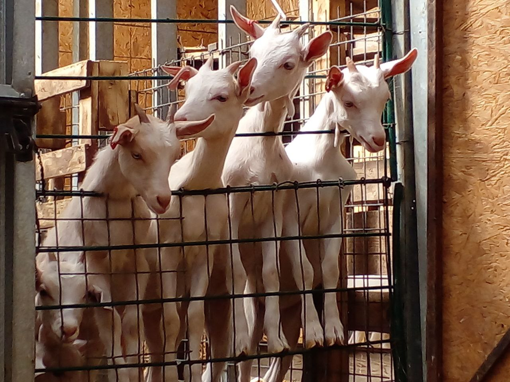

La iniciativa ha trabajado desde el año 2017 en potenciar el rubro, que en la Región de Coquimbo representa una de las actividades más preponderantes, concentrando un 65% de la masa caprina a nivel nacional.

Fue a comienzos de este año que el Programa Territorial Integrado (PTI) Caprino dio por finalizada sus operaciones, luego de cuatro años de funcionamiento, donde impulsó el mejoramiento competitivo de la cadena de valor del rubro caprino en las comunas de Monte Patria, Illapel, Canela, Combarbalá, Punitaqui y Salamanca. Durante ese tiempo, el trabajo se canalizó en distintas vertientes, las cuales apuntaron a fortalecer las competencias productivas, comerciales y tecnológicas de los crianceros. Hoy, la iniciativa vuelve renovada bajo la línea del Programa Transforma, la cual es ejecutada por Corfo y cofinanciada por el Gobierno Regional, a través del Programa de Zonas Rezagadas.
Gregorio Rodríguez, director de Corfo Coquimbo, explicó que “el objetivo esencial de los programas Transforma es, tal como indica su nombre, transformar su respectivo rubro y en este caso se ajusta completamente a lo que ha venido realizando el PTI Caprino, ahora Transforma Caprino. Su aporte ha sido tremendamente positivo y no tenemos duda que su labor durante los próximos años será igual de preponderante en esta actividad que tiene tanta relevancia en nuestra región”.
Una de las líneas de trabajo más importantes del programa ha estado relacionada con la transferencia tecnológica, la cual sirvió para concretar la entrega de módulos para la elaboración de quesos, charqui y otros derivados, permitiéndoles a los productores asegurar la calidad e inocuidad de sus elaboraciones. Otro de los proyectos que lograron consolidarse fue el Centro de Desarrollo Agropecuario de Canela Baja, iniciativa que provino de la Agroecológica Canela Baja, que agrupa a más de 600 socios de la localidad. Dentro de estas instalaciones se encuentra la fábrica de carne Catahueche, que se dedica a la elaboración de carne preparada y sus derivados.
Ingrid Haselbauer, gerente del programa Transforma Caprino, indicó que “estaremos fuertemente enfocados en el mercado y bajo esa línea, no hay manera de llegar en buena forma a competir si no hay una alta calidad de productos y para eso es necesario seguir modernizando las fábricas, respetando por supuesto la historia y el origen de esta actividad. El objetivo es asegurar la inocuidad de los productos y, por qué no, diversificarlos”.
En este sentido, otro aspecto relevante estuvo relacionado con la transferencias de nuevos conocimientos que sirvieran para optimizar la labor productiva. Es por esto que se realizaron seminarios, talleres, charlas y cursos donde los crianceros pudieron conocer la experiencia de profesionales especialistas en temas como la alimentación del ganado caprino, herramientas de manejo genético para mejorar la productividad, la calidad de la leche, entre otras temáticas.
En torno a este tema, Rodrigo Gutiérrez, coordinador regional del Programa de Gestión Territorial para Zonas Rezagadas, declaró que “en general, los resultados de los seminarios realizados por el PTI Caprino han sido fantástico. Debo destacar la experiencia de cada uno de los expositores, que enriquece absolutamente a quienes pudimos escucharlos. Si puedo sacar un resumen de todo lo vivido en cada seminario, es la importancia de potenciar el consumo de los productos caprinos y lo relevante que es integrar a otros actores, como los empresarios gastronómicos”.
Esta nueva etapa se prolongará por tres años en su fase inicial, con la posibilidad de extenderse hasta 10 años. Sus objetivos estratégicos se alinearán con el programa anterior, haciendo especial énfasis en la competitividad de los productos y apuntando a los mercados formales con un alto estándar de calidad. Esto irá acompañado de una sociabilización de los beneficios nutricionales de los derivados caprinos como su alto aporte proteico y vitamínico, bajo colesterol y fácil digestión.
Misma ventaja se presenta en los quesos de leche de cabra elaborados en la región, los cuales poseen ciertas características únicas frente a los quesos producidos en otras partes de Chile. Esto debido, principalmente, a la alimentación del ganado, que consiste en pastoreo y ramoneo de arbustos y pastizales naturales.
En este sentido, Ingrid Haselbauer ahondó en las ventajas competitivas de los productos caprinos de la región y lo importante que es apostar por el desarrollo sin perder la identidad histórica que esta actividad representa. “La gente debe conocer qué es lo que se ha hecho y qué es lo que se sigue haciendo. Esta es una labor que involucra a miles de familias en nuestra región que viven en situaciones muchas veces extremas y que les ha permitido salir adelante, educar a sus hijos y sostenerse por muchas décadas. Es una historia muy hermosa de contar y para eso estamos nosotros”, expresó.